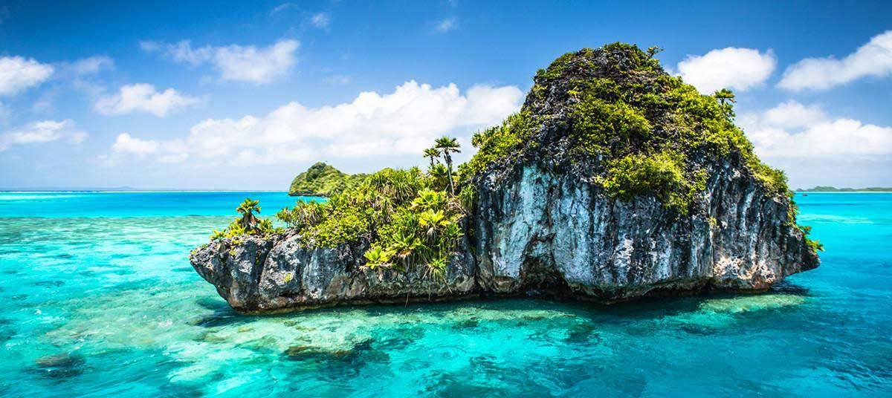
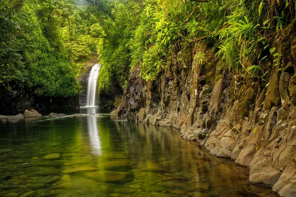
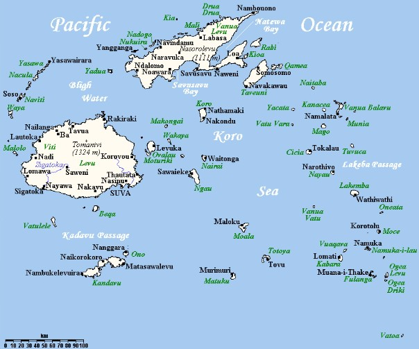
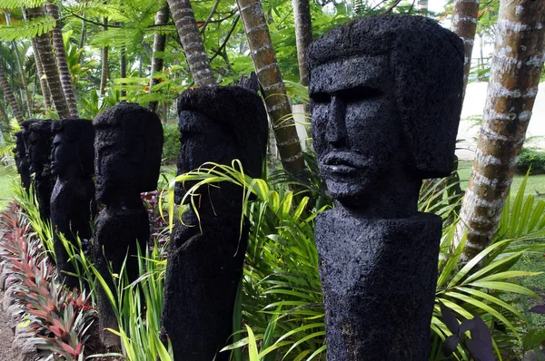

Фіджі – Райський архіпелаг в серці Тихого океану
Фіджі – це екзотичний архіпелаг, що складається з понад 300 островів, розташованих у
південній частині Тихого океану.
Фіджі славиться своїми бірюзовими водами, білосніжними піщаними пляжами та неймовірним
морським життям, яке приваблює
туристів з усього світу. Кожен острів має свій унікальний колорит і багату культуру, що
робить Фіджі місцем, де кожен
знайде для себе щось особливе.

Географія та природа
Фіджі розташоване на схід від Австралії та на північний схід від Нової Зеландії.
Основними островами архіпелагу є
Віті-Леву та Вануа-Леву, які становлять більшу частину території та населення країни.
Столиця країни, Сува, розташована
на острові Віті-Леву та є важливим культурним і економічним центром.
Природа Фіджі дивує різноманітністю: густі тропічні ліси, що вкривають гори, вражаючі
водоспади, а також коралові рифи,
які тягнуться вздовж берегів і є домівкою для багатьох морських видів. Архіпелаг відомий
своєю флорою та фауною, а також
чудовими можливостями для дайвінгу та сноркелінгу.

Історія Фіджі
Фіджі має багату історію, коріння якої сягають близько 3 000 років тому. Перше заселення
островів здійснили полінезійці,
які принесли з собою свої традиції, мову та вірування. Пізніше сюди прийшли фіджійці з
островів Меланезії, які заклали
основи сучасної культури країни.
У 1874 році Фіджі стало британською колонією, що значно вплинуло на розвиток островів.
Країна здобула незалежність у
1970 році й відтоді активно розвиває свою економіку, туристичну індустрію та культуру.
Сьогодні Фіджі є однією з
найбільш стабільних і розвинених країн у Тихоокеанському регіоні.

Культура та традиції
Культура Фіджі багата та різноманітна. Близько 56% населення становлять фіджійці, які
зберігають свої традиції та
обряди, а 38% — нащадки індійців, які прибули сюди в колоніальні часи як робітники на
плантації цукрової тростини.
Однією з традиційних церемоній на Фіджі є церемонія кави (напою, зробленого з кореня
рослини кава). Цей напій має легкий
заспокійливий ефект і символізує гостинність і дружбу. Також на Фіджі популярні танці та
пісні, які виконуються під час
святкових заходів, часто під звуки барабанів та інших народних інструментів.
Більше
Цікаві місця для туристів
Фіджі – це справжній рай для любителів пригод і релаксу. Ось кілька місць, які
обов'язково варто відвідати:
-
Острови Маманука – група невеликих островів із чарівними пляжами та
кришталевими лагунами. Тут знаходиться відомий
курортний острів Монурікі, де знімали фільм "Вигнанець" з Томом Генксом.
-
Національний парк Корояніту – це мальовничий парк на острові Віті-Леву, де можна
побачити прекрасні водоспади,
різноманітну рослинність і познайомитися з фіджійською природою під час піших
прогулянок.
-
Музей Фіджі. - Музей містить різноманітні колекції, які охоплюють археологічні знахідки, етнографічні артефакти, зразки традиційного
мистецтва, ремесел та багато іншого. Тут можна знайти предмети, що демонструють повсякденне життя фіджійців, їх звичаї
та традиції.
-
Кораловий риф Бека Кораловий риф Бека – один із найвідоміших рифів у світі для занурення з
аквалангом. Це чудове місце для спостереження за
коралами, рибами і навіть акулами.Риф відзначається багатим підводним світом, де мешкають різноманітні види риб, морських черепах, коралів та інших
морських організмів.